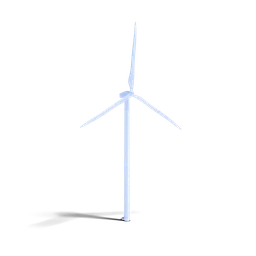
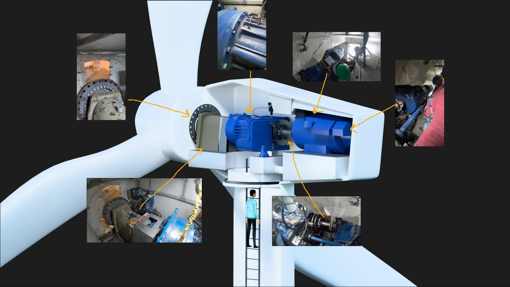
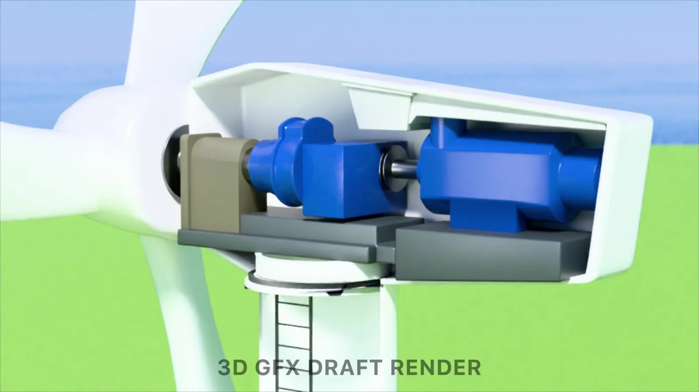

Project
Wind Turbine Graphics
Purpose
Complement live action footage shot inside of the windmill with accurate 3D graphics
My Role
3D Modeling and Animation
Scope
Model a Gamesa G52 850k wind turbine, including its internal components
Result
A detailed 3D model and 75 seconds of animation. 2 days to model, 1 day to animate, 1 day for revisions. Final video.

Process
Building the Exact Turbine
Using only close-up, claustrophobic reference images shot on site, I pieced together the full interior of the windmill like a puzzle, giving our audience a complete view of the turbine that the live-action footage could not capture.

Process
From Blockout to Final Diagram
First, I made a blockout of the 3D model and animation. Use the slider to see how it compared to the final.


Final Work